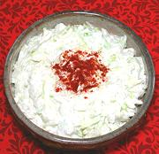

|
Sour Cream ColeslawHungary - Tejfölös Káposztasaláta | ||||
| Serves: Effort: Sched: DoAhead: |
6 salad ** 1 hrs Most |
A coleslaw so good you may never want to make slaw with mayonnaise again. | |||
|
2 5 3 ----- 1 16 1/2 2/3 1/2 ----- ar |
# oz oz --- T oz t t t --- |
Cabbage, white Onion Hungarian Pepper (1) --Dressing Wine Vinegar, white Sour Cream Sugar Salt Pepper -- Garnish Paprika |
Make: - (1 hr - 15 min work)
|